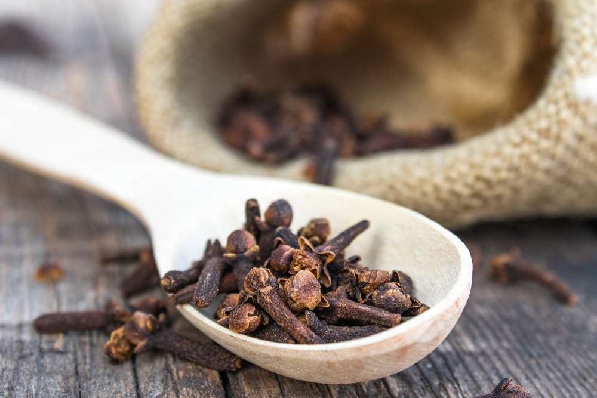
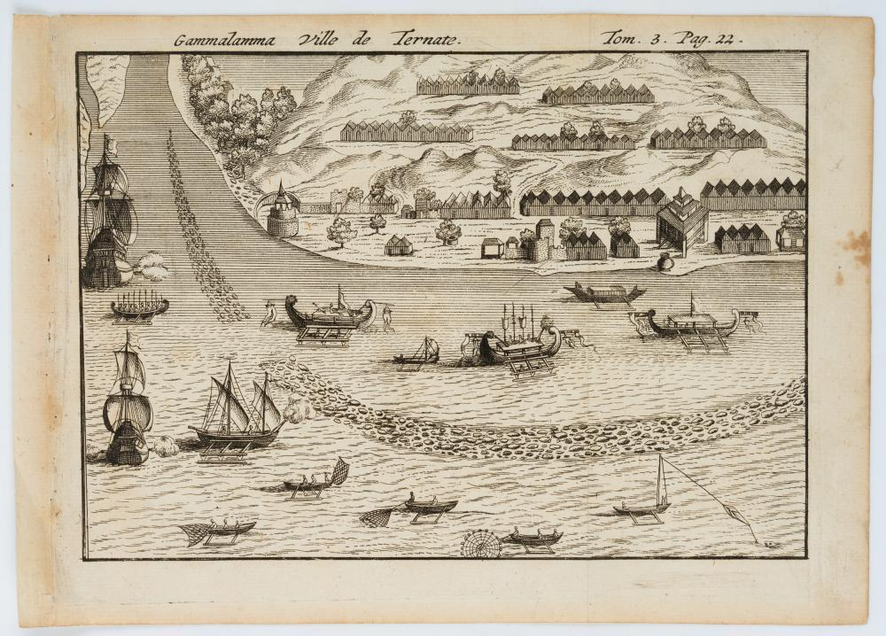
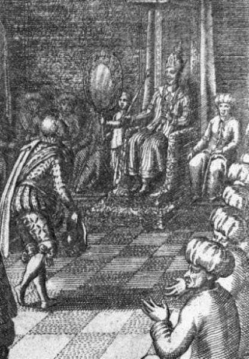
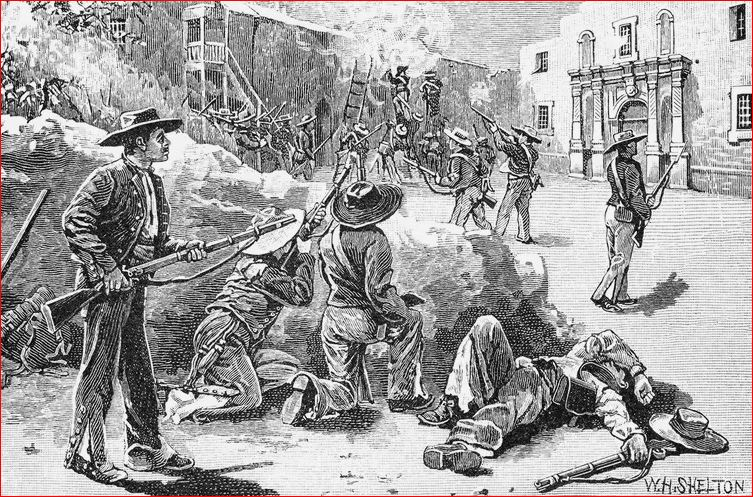

Perlawanan Sultan Baabullah
Perlawanan Sultan Baabullah dari Ternate, Maluku Utara

Sultan Baabullah, pemimpin perlawanan rakyat Ternate melawan Portugis.
Ternate, Jantung Perdagangan Cengkih
Sejak lama, Ternate dikenal sebagai pusat utama perdagangan cengkih yang paling dicari di dunia. Kekayaan rempah inilah yang membuat Portugis datang dan mendirikan benteng di sana pada tahun 1522, sebuah langkah yang perlahan menciptakan ketergantungan besar antara Ternate dan bangsa asing tersebut.
Pada mulanya, hubungan ini berjalan tanpa banyak gesekan. Ternate menganggap Portugis sekadar pedagang yang juga berkuasa di bandar persinggahan Malaka, dan mengakui bahwa senjata mereka jauh lebih unggul. Namun kenyamanan itu tidak bertahan lama — seiring waktu, perilaku para serdadu Portugis di bumi Ternate mulai menimbulkan ketidaksukaan di kalangan rakyat.

Tipu Muslihat di Benteng Kastela
Ketegangan yang lama terpendam akhirnya meletus lewat sebuah pengkhianatan. Pada 27 Februari 1570, Portugis berhasil membujuk Sultan Ternate, Sultan Khairun, untuk datang ke Benteng Kastela melalui sebuah undangan licik. Tanpa curiga sedikit pun, Sultan Khairun memenuhi undangan tersebut.
Sultan Khairun dibunuh oleh Antonio Pimental atas perintah Gubernur Portugis ke-18 di wilayah Maluku, Diego Lopez de Mesquita. Peristiwa keji inilah yang kelak menjadi pemicu utama perlawanan besar rakyat Ternate.

Baabullah Naik Takhta, Amarah Rakyat Tersulut
Sepeninggal ayahnya, Sultan Baabullah pun naik takhta menggantikan Sultan Khairun. Ia segera menuntut pemerintah kolonial Portugis bertanggung jawab dengan menghukum Gubernur Lopez atas kematian ayahnya.
Tuntutan itu tidak pernah digubris. Sikap Portugis yang mengabaikan permintaan keadilan inilah yang akhirnya membangkitkan emosi Sultan Baabullah — dan menjadi titik balik yang mengubah kekecewaan pribadi menjadi perlawanan seluruh rakyat Ternate.

Empat Tahun Mengepung Gam Lamo
Sultan Baabullah bersama seluruh rakyat Ternate kemudian mengepung Benteng Kastela — yang pada masa itu juga dikenal dengan nama Benteng Gam Lamo, atau "Kampung Besar". Pengepungan ini berlangsung selama empat tahun penuh, dengan satu tuntutan tegas: Portugis harus angkat kaki dari Ternate.
Peristiwa inilah yang menjadi titik tolak perjuangan rakyat Ternate melawan penguasa asing. Melalui perlawanan panjang ini, rakyat Ternate belajar satu pelajaran penting: bahwa persatuan adalah kekuatan utama dalam mempertahankan hak atas tanah air dan segala sumber daya di dalamnya.

Jejak Waktu Perlawanan
Portugis mendirikan Benteng Kastela
Menandai awal kekuasaan dan ketergantungan dagang Ternate terhadap Portugis.
Sultan Khairun dibunuh
Tewas dibunuh Antonio Pimental atas perintah Gubernur Diego Lopez de Mesquita, setelah diundang secara licik ke Benteng Kastela.
Sultan Baabullah naik takhta
Menuntut pertanggungjawaban Portugis; tuntutan diabaikan hingga membangkitkan perlawanan rakyat.
Pengepungan Benteng Kastela
Selama empat tahun, Sultan Baabullah dan rakyat Ternate mengepung benteng dan mengultimatum Portugis untuk pergi.
Portugis resmi meninggalkan Ternate
Di bawah Sultan Baabullah, Ternate berkembang menjadi salah satu kesultanan paling berpengaruh di Nusantara timur, hingga ia dijuluki "Tuan dari Tujuh Puluh Dua Pulau".
Makna Perlawanan
Ternate adalah tanah air mereka, dan segala sumber daya di dalamnya layak untuk mereka perjuangkan. Kisah Sultan Baabullah mengajarkan bahwa persatuan rakyat — bukan hanya kekuatan seorang pemimpin — adalah yang mampu mengusir penjajah dan mempertahankan martabat sebuah bangsa.
✦ Tahukah kamu?
Sultan Baabullah dijuluki "Tuan dari 72 Pulau" karena wilayah Ternate meluas hingga banyak pulau di Nusantara timur.
Scan untuk Quiz!
Disusun oleh
Kelompok Ternate
1. Alif Maulana
2. Chaerul Rizky
3. Diani Putri
4. M Sultan Sopian